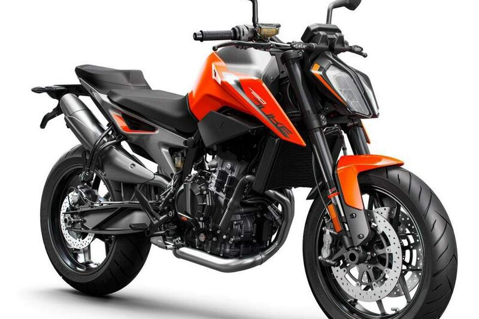

This page collects the service data recorded for the KTM 790 Duke (2018–2023). It covers fluid capacities, wear parts, battery and brake-pad references, torque values and a practical maintenance checklist. Always confirm the exact model year and market against the workshop manual before ordering parts or tightening fasteners.
The model page remains the primary specification reference. This service page is a focused maintenance view of the same verified catalogue data.
Service data at a glance
Torque specifications
Service-manual reference values. Torque figures can vary by model year, market and fastener condition — confirm against the workshop manual.
| Component | Torque | Notes |
|---|---|---|
| Oil drain plug | 20 Nm | Replace crush washer |
| Front axle nut | 50 Nm | — |
| Rear axle nut | 60 Nm | — |
| Front brake caliper bolts | 30 Nm | — |
| Spark plugs | 14 Nm | — |
Maintenance checklist
- Engine oil — check the level and condition; replace it at the interval in the owner's manual.
- Oil filter — replace it with the oil change where the manual specifies a filter change.
- Chain and sprockets — check slack, lubrication and wear.
- Tyres — check pressures, tread depth and sidewall condition.
- Brakes — check pad thickness, disc condition and fluid level.
- Battery — check terminals, charge and the hold-down.
- Fasteners — check axle, caliper and handlebar clamp bolts.
- Cooling system — check the coolant level and hoses when the engine is cold.
- Valve clearance — check at the manufacturer's stated interval.
Frequently Asked Questions
What is the torque of the KTM 790 Duke?
Manufacturer-claimed peak torque is 87 Nm @ 8,000 rpm.
What tyres does the 790 Duke use?
Tyre sizes are listed as 120/70-17 front, 180/55-17 rear.
What brakes does the KTM 790 Duke use?
Front: 300 mm dual discs, radial 4-piston calipers. Rear: 240 mm disc.
What battery does the 790 Duke use?
The listed battery code is YTZ10S. Battery rating: 12V 8.6Ah. Confirm terminal layout and case dimensions against the battery fitted to your machine.
What brake pads does the 790 Duke use?
Front: Brembo 07BB19. Rear: Brembo 07BB02. These are pad-shape references; confirm the compound and exact model year before ordering.
What spark plug does the 790 Duke use?
The listed spark plug is NGK LMAR9AI-10. Confirm the gap and heat range for your model year.
What chain does the 790 Duke use?
The listed chain or final drive is 525 O-ring, 116 links. Confirm the pitch, link count and adjustment procedure for your model year.
What is the engine oil capacity of the KTM 790 Duke?
Engine oil capacity is 3.0 L (3.2 US qt) and the recommended grade is SAE 10W-50, JASO MA2. Confirm the exact fill procedure in the owner's or workshop manual.